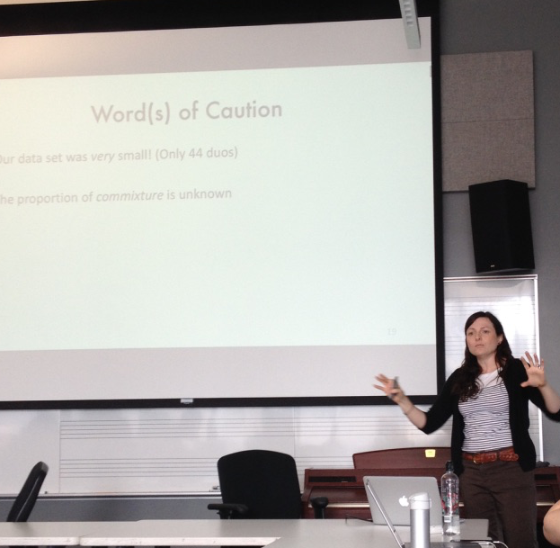
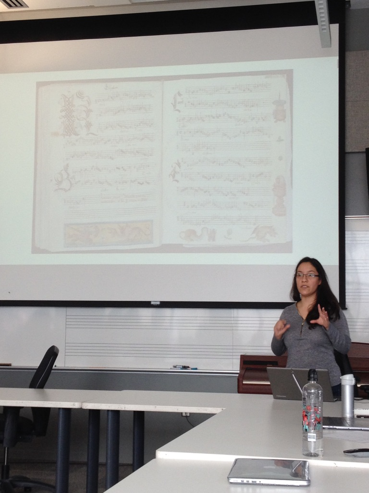
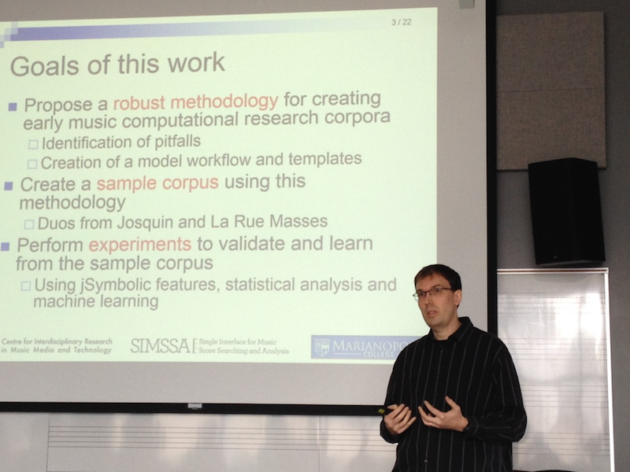
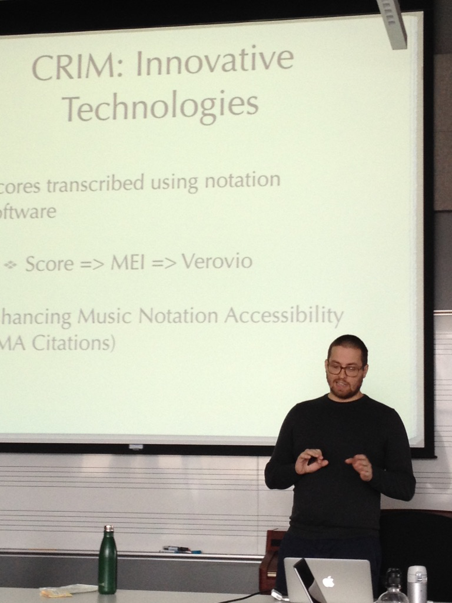
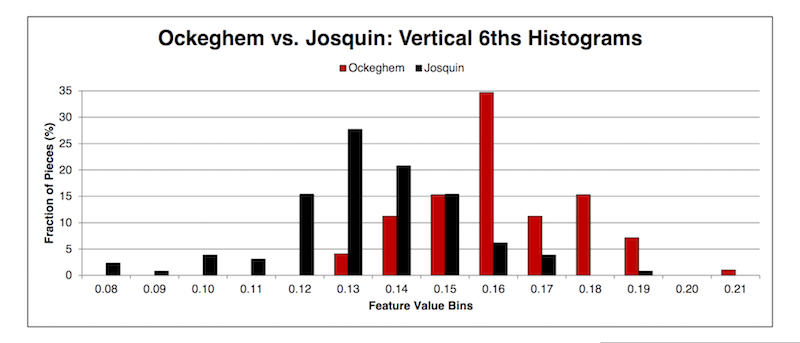
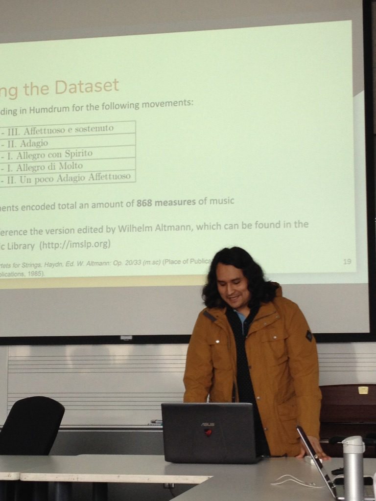
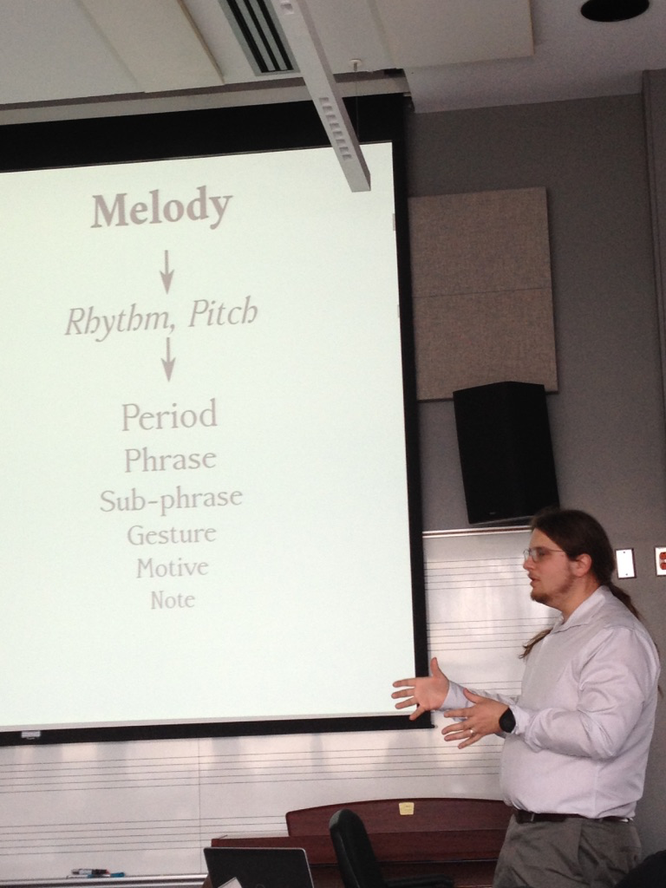
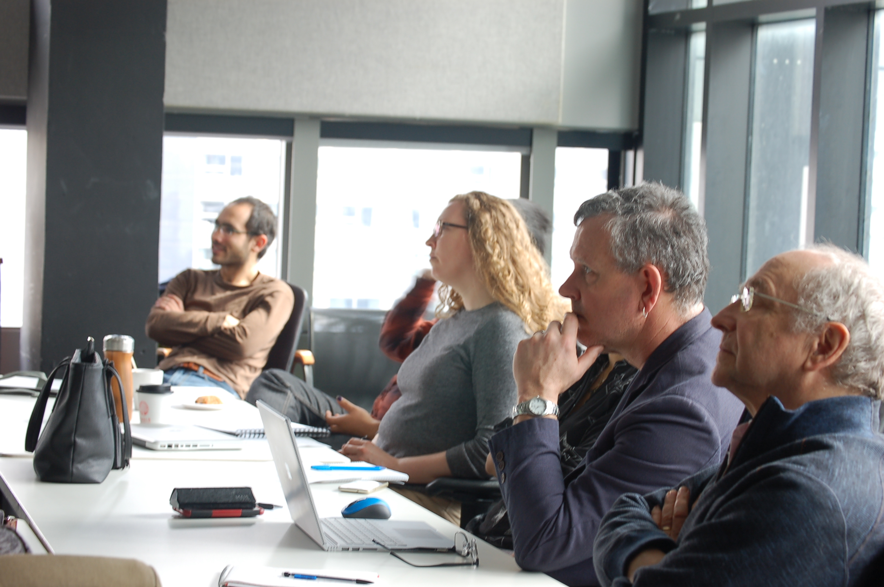

Workshop on Digital Musicology
Posted by ehopkins on May 04, 2018
On 27 April, we held a workshop with CIRMMT RA 2 – Music Information Research. This workshop was designed as a companion to Eleanor Selfridge-Field’s CIRMMT Distinguished Lecture. Unfortunately her visit to Montreal had to be cancelled but we were able to hold the workshop anyways, and I’ve included all the slides here for anyone who was not able to attend but wants to know more!

The first presentation was from Claire Arthur, based on work done towards a chapter in the forthcoming Oxford Handbook of Music and Corpus Studies with Peter Schubert and Julie Cumming. The presentation was titled “Whose Line is it Anyway?: Assessing Melodic Features of Mode in Polyphony.” For this presentation, Claire described their study’s investigation of the nature of mode in polyphonic music. Using 44 Renaissance duos with modal labels taken from treatises and didactic collections, they examined which features were best for computationally determining mode, comparing the computer’s guesses to those from early music experts.

Next up, Martha Thomae presented on the “Automatic Scoring-Up of Mensural Parts.” Before the development of modern common Western music notation, there was mensural music. Starting in the 13th century, this style had different shapes and colours of noteheads to indicate rhythm, but there were no barlines, and some of the interpretation depends on context and mensuration signs (an early ancestor of the time signature.) This music was distributed in handwritten partbooks (shown below behind Martha), where each voice was in a separate part of the page or book (in contrast with a more modern score where the parts are aligned.) This can make analysis and performance challenging.

Martha devised this algorithmic implementation of 13th-century music theory rules to allow early music part books to be automatically aligned. This will have applications for counterpoint study and performance, but also as part of the larger OMR process we are building with SIMSSA. Check out our previous interview with her for more discussion of this research.
The next paper focussed on Methodologies for Creating Symbolic Early Music Corpora for Musicological Research. This paper came out of Julie Cumming’s research on madrigals. She wanted to build a corpus and use Cory MacKay’s jSymbolic software to do machine learning, looking at questions about the origin of the genre. Julie was away at a digital humanities conference in Mainz (presenting “Why Should Musicologists do Digital Humanities?”), so Cory presented on her behalf. Other co-authors Jonathan Stuchbery, an undergradute in music performance who was very involved in the editing and transcription process, and SIMSSA Project Director Ichiro Fujinaga.

When creating a corpus of symbolic music files, different notation programs and settings can effect the end results, potentially making them artificially good or adding unecessary noise. In this study, they investigated the details of the transcription process, going from original score to symbolic file. We don’t want to run machine learning experiments where we get 100% results when the real difference we are detecting is that between Sibelius and Finale! The paper talks about different areas of concern and suggests best practises for the future.
Finishing the first half of the workshop, Ian Lorenz presented on work he did at Citations: the Renaissance Imitation Mass, which held summers of analysis in 2016 and 2017. Work done at CRIM included the development of a Controlled Vocabulary for discussing different musical presentation types in the Renaissance imitation mass, as well as the development of EMA citations (Enhancing Music Notation Accessibility.) This method uses Verovio to render MEI in the browser, and then allows the researcher to select a part of the score and create a stable URL that links back to the score. Each example of a presentation type can be linked to directly in the score. In Cadéac, Gobert, and CRIM: A New Approach to the Renaissance Imitation Mass, Ian showed how he can use tools from CRIM to gain new insights into the work of Gombert. For more, see our blog post interviewing him about the project here.

After the coffee break, Cory McKay gave an overview and tutorial of his software jSymbolic; you can view the slides on his site here. jSymbolic extracts features from MIDI files, allowing us to do machine learning experiments in a wide range of genres. These include some impressive results getting jSymbolic to guess the composer within a repertory. Cory demonstrated some ways to visualize features, like this histogram comparing vertical 6ths in Ockeghem versus Josquin.

jSymbolic also works with Weka data mining software. You can learn more about jSymbolic on Cory’s site here and you can also check out in our blog post annnouncing the release of jSymbolic2 here.
Before coming to McGill, Néstor Nápoles studied at the Universitat Pompeu Fabra. For this workshop, he presented on the work he did for his Maste’rs thesis with the CompMusic project, doing automatic harmonic analysis for string quartets: Dataset Creation and Automatic Harmonic Analysis for Six Quartets from Op. 20 by Joseph Haydn He created a dataset of Haydn’s Op. 20 using Humdrum, using the **harm syntax to encode human-annotated functional harmony. He then compared these results to automatic annotation done with existing algorithms (Temperley, 1997; Temperley & Sleator, 2001; Sapp, 2013).

Finally, Nat Condit-Schultz introduced his project “Elision and Enjambment in Musical Lyrics: A Systematic Analysis of Text-Music Organization in Art and Popular Song.” (zoom in to see the details.) Nat’s research looks at musical phrases and text phrases and the ways in which they align – and don’t align. He emphasized the important of including text when we encode music.
{kind=link}

A brief round-table discussion followed, including looking at better ways to connect developers and musicologists. At SIMSSA we connect these groups on a regular basis, in our weekly meetings and in workshops like this one, but it can still be hard to bridge the gap between the sorts of questions people want to ask, the tools we can build, and questions we haven’t even considered asking yet. Music also poses unique challenges for study through machine learning – when even the expert humans can’t agree about the mode of a given piece, what can we expect from the computer? Turning implicit rules of music theory into explicit algorithms often reveals gaps in the theory, or reveals just how much is still ambiguous or subjective.

Thank you to CIRMMT and everyone who presented their research and helped run the workshop!